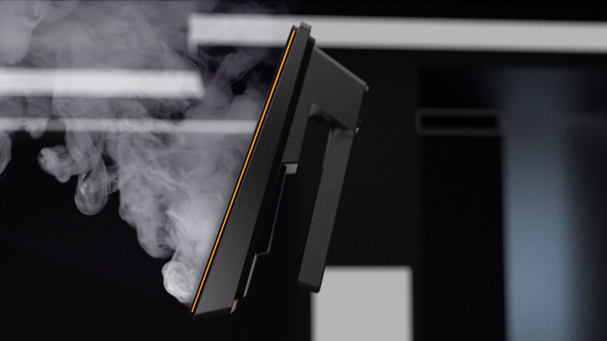
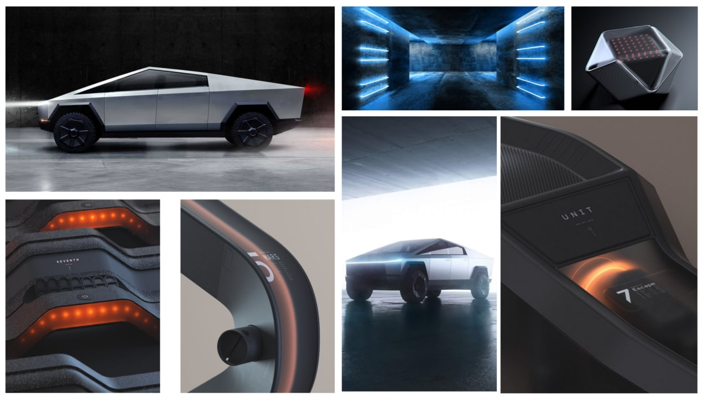
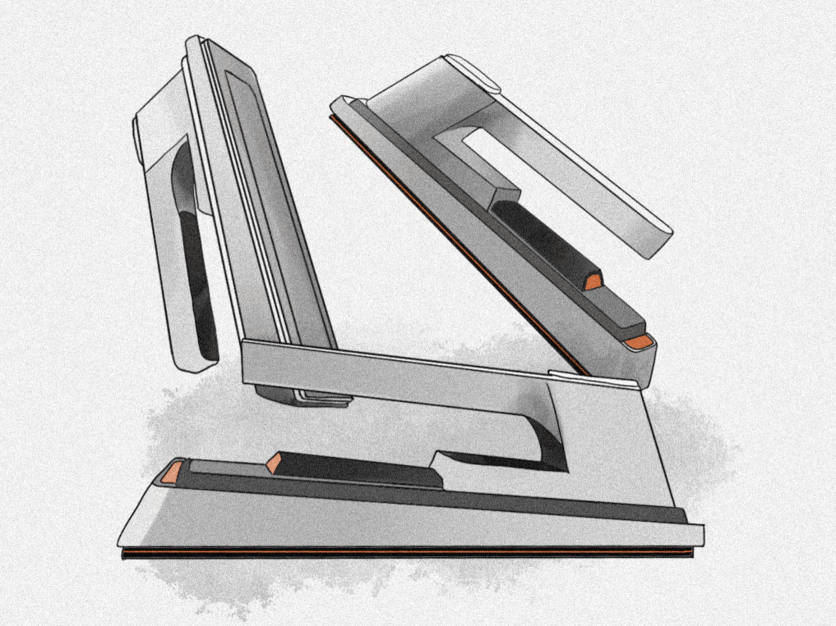
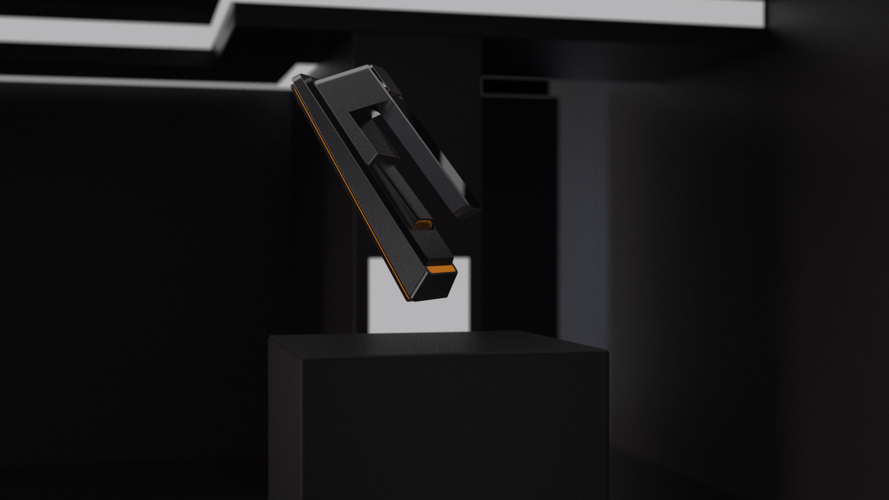
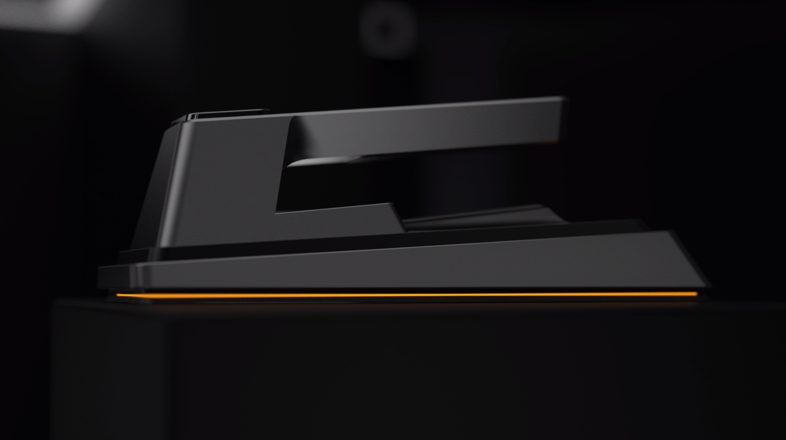
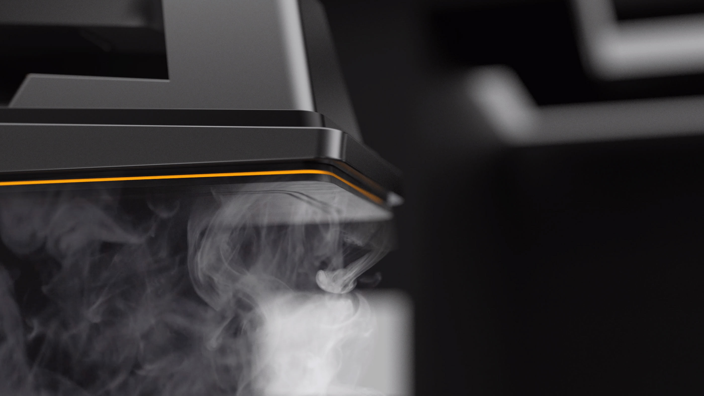
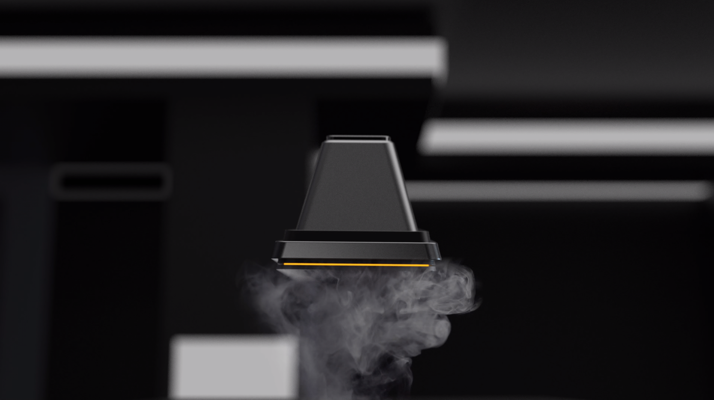

Teslon: An Iron Designed Like a Tesla
Teslon is a personal design exercise built around a simple brief: choose a brand, choose an everyday object, and redesign that object entirely within the chosen brand's design language. This exploration paired Tesla against one of the most overlooked objects in the home, a clothes iron.

Design a familiar object through someone else's eyes
The brief behind this project was intentionally open ended: pick a brand, pick an object that brand has never made, and design that object as if it belonged to the brand's own product line, using its design language as the only constraint.
The animation below walks through the final design. It was rendered in KeyShot, then edited in Premiere Pro.
A car maker's language, applied to a clothes iron
The brand chosen for this exercise was Tesla, and the object chosen was a clothes iron.
Why Tesla
Tesla's product language, most visible in the Cybertruck, is built around confident, faceted surfaces, a near total absence of visual clutter, and a willingness to look unlike anything else already on the market. That made it a strong, clearly readable language to translate onto a completely different category of object.
Why an iron
An iron was chosen deliberately because it is one of the least glamorous objects in the home, small, utilitarian, and rarely designed with much visual ambition. Pairing it against a brand as bold as Tesla made the translation exercise more demanding, and the result more interesting.
Borrowing the Cybertruck's rugged confidence
The moodboard was built almost entirely around the Cybertruck: its unpainted, faceted exoskeleton, its interior details, and the confident, almost industrial feel it gives off despite being a consumer vehicle. The goal was to carry that same rugged, unapologetic feel into a small handheld appliance rather than softening it down for a domestic product.

Reference pulled directly from the Cybertruck: its faceted body, its restrained orange accent lighting, and its confident, industrial interior details.
Translating a vehicle's language onto a handheld object
The thinking behind Teslon centered on identifying the smallest set of moves that would still read unmistakably as Tesla, then applying those same moves consistently across a much smaller product.
Three cues carried the most weight, and became the rules the entire form had to follow, from the handle down to the sole plate.
- Flat, faceted surfaces meeting at sharp, confident angles instead of soft consumer curves
- A single glowing accent line used sparingly rather than decoratively
- A matte, almost unfinished surface finish that reads as rugged rather than precious
Working out the form on paper first
Early sketches focused on how a faceted, angular language could still resolve into an object that is comfortable to grip and safe to rest on a surface, working through the handle, sole plate, and steam reservoir as a single continuous form rather than three separate parts.

Teslon, in the Cybertruck's own visual language
The final design carries the Cybertruck's language across every surface of the iron: flat matte black panels meeting at sharp folded edges instead of the rounded plastic shells most irons use, a single continuous orange line tracing the base the same way the Cybertruck's light bar traces its front end, and a cantilevered handle silhouette that echoes the truck's own angular roofline. Even the steam reservoir cap was resolved as a faceted cone rather than a soft dome, keeping every part of the object consistent with the same rugged, industrial confidence.




What this exercise made possible
Teslon was never meant to become a real product, its value was in the discipline of the exercise itself: reading a brand's design language closely enough to reduce it to a small set of repeatable rules, then applying those rules with enough consistency that an object as ordinary as a clothes iron could read as unmistakably Tesla. That same discipline, translating a brand's identity into a coherent physical language rather than applying it as surface decoration, carried directly into later client and OEM work.